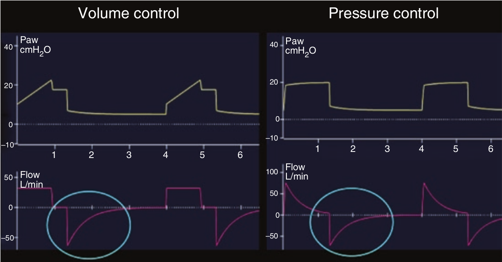

در هنگام بازدم، منحنی فشار راه هوائی فقط نشان دهنده PEEP تنظیم شده بر روی ونتیلاتور می باشد. بنابراین صرف نظر از مد ونتیلاتور، آنالیز بازدم فقط بر اساس منحنی شدت جریان صورت می گیرد.

آنالیز بازدم بر مبنای کدام است؟
۱ - منحنی فشار
۲ - منحنی شدت جریان
۳ - حجم جاری دمی
۴ - قدرت سرفه
۵ - مهارت بالینی